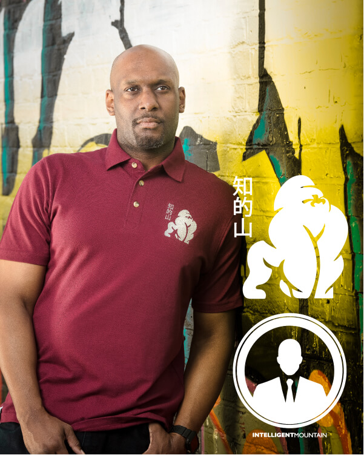
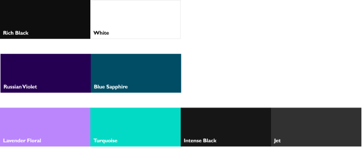
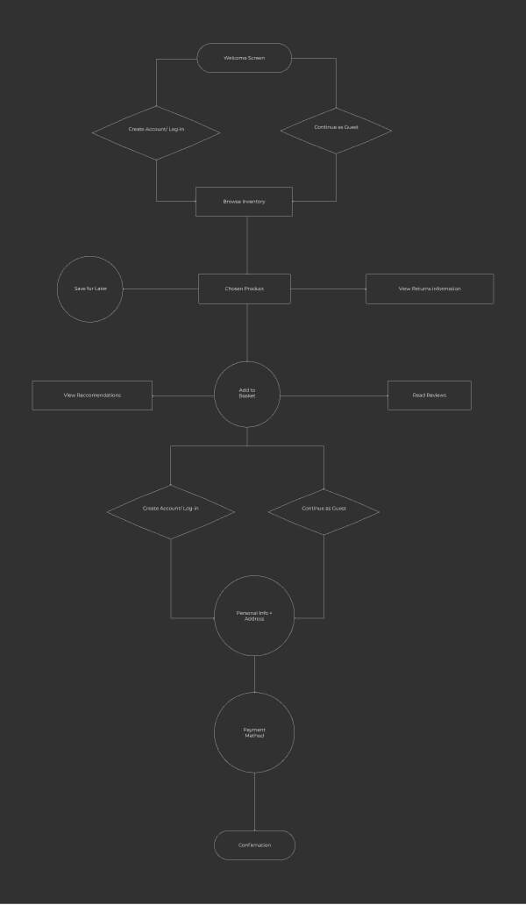
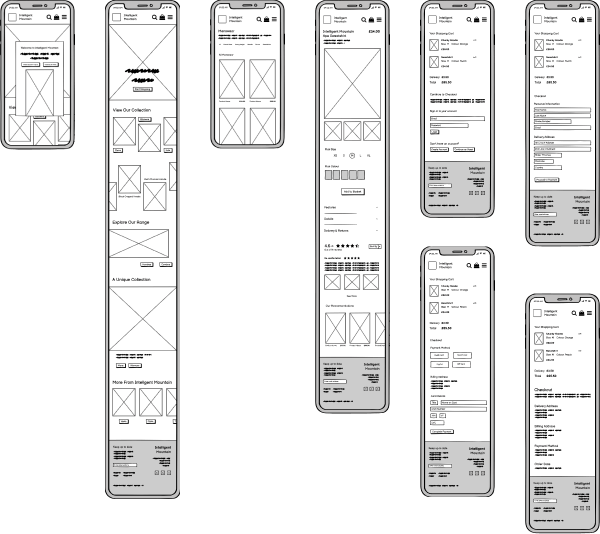
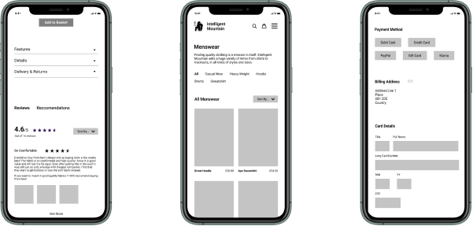
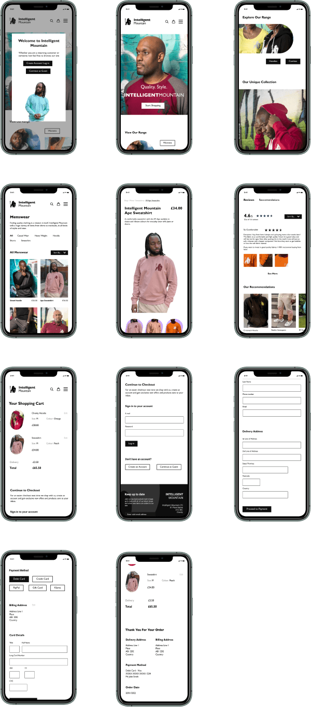

Online Store - Intelligent Mountain
Introduction
The scope of this case study is to improve the overall branding of the current site, by designing the web-app from scratch as appose to a website builder tool. As well as this, some key features required more usable design solutions.
Branding Guidline - Logo
Intelligent Mountain has two types of logos, which should be black, however, if contrasted against a dark background, white can be used too. The Ape is the main logo, the Intelligent Man however, should only be used to advertise the upcoming line of men’s smart wear only.
Branding Guidline - Colours
The primary colour palette is completely grayscale and should be used in most areas of the design i.e. text and backgrounds The secondary colour palette can be used to add burts of colours either in image backgrounds, links, or buttons (hover only). The supporting colour palette can be used to allow more freedom when designing in order to tone down the primary and secondary colour palettes.
Branding Guidline - Fonts
Gill Sans was chosen as it is a typeface with a professional but distinct style. The bolder fonts provide a more logo style effect, but the lighter fonts have a very readable text.
User Flows
Creating user flows helped to visualize the route the app would follow. This process also allowed me to learn what shapes represented what types of screens
Low-Fidelity Wireframes
Initially the sketches aimed to identify what elements would be included and how the screens would be laid out. The low-fidelity wireframes helped to define the spacing and the true sizing of elements
User Testing
Using the mid-fidelity wireframes, three users were given a set of tasks to complete where notes would be taken and analysed in order to propose important suggestions for the designs. I felt that user testing could have been further in depth, and more users could have been tested, but due to time constraints I was restricted. However, I still obtained valuable results which were reflected in high fidelity wireframes
High-Fidelity Wireframes
Added tab so that users can clearly see that they can see reviews and recommendations on while on a product without having to scroll Added ‘sort by’ drop down so that users can view products by price, popularity etc. Added the option for Klarna payments as it is very popular now and would appeal to a younger demographic
Final Designs
Overall, I feel I have made a seamless user experience that allows to purchase Intelligent Mountain products in a familiar way while incorporating the unique style the brand offers.
